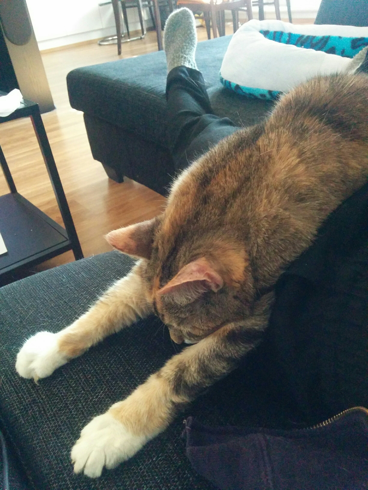

Waarin wiikkowiesti 11/2018 - Ylihuomenna fuksi sinussa kuolee...
15.04.2018 fuksit / wiikkoviesti / wappu / pistekorttien palautus /
Wappu lähestyy!
Tällä viikolla suoritettiin laulukokeita ja sanoitettiin uusia teekkarisävelmiä Lalasaunassa. Wappu lähestyy päivä päivältä, ja auringonpaisteen mukana yleinen Wapputohina ja -fiilis ovat laskeutuneet Otaniemeen. Ensi viikolla puhaltaakin taas uudet tuulet: tiistaina on Fuksintappo (jonka ilmoittautuminen sulkeutuu tänään), ja perjantaina Jäynäfinaali sekä Wappulehti Julkun juhlallinen julkaisu!
Torstaihin mennessä tulee sinun myös palauttaa fuksipistekorttisi, jos haluat teekkarilakkisi Wappuna saada. Fuksiwaari päivystää kiltahuoneella maanantaina klo 17-18, keskiviikkona klo 9-11 ja torstaina klo 12-14. Tule siis pyytämään puuttuvat leimat, ja pudottamaan oma pistekorttisi kiltahuoneelle, samaan laatikkoon kuin loppusyksystä!
<3 Milla
Sisällysluettelo
- Tärkeää
- Fuksintappo ti 17.4. aikaisintaan klo 18:00 @ Takkakabinetti, Jämeräntaival 3
- Fuksipistekorttien palautus to 19.4. mennessä
- Loppunurkkaus
Tärkeää
1. Fuksintappo ti 17.4. aikaisintaan klo 18:00 @ Takkakabinetti, Jämeräntaival 3
Jotta teekkari voi syntyä, on fuksin kuoltava.
Sisäinen fuksisi kuolee vain kerran, joten ota siitä kaikki irti. Fuksintappo on jännittävä seikkailu Otaniemessä läpi haasteiden ja vaarojen, kenen muunkaan, kuin parhaiden ystäviesi kanssa. Tule mukaan ja koe se itse! Seikkailu alkaa Takkakabinetista ja jatkot ovat Rantsulla tapahtuman loputtua, missä on tarjolla ruokaa.
Tapahtuma on alkoholiton.
ILMOITTAUTUMINEN SULKEUTUU TÄNÄÄN KLO 23:59!
2. Fuksipistekorttien palautus to 19.4. mennessä
Wapun lähestyessä on aika palauttaa pistekortit! Rakkaalta kiltahuoneeltamme löytyy maanantaiaamusta alkaen laatikko, johon voit käydä tiputtamassa pistekorttisi. Palauta pistekorttisi viimeistään 19.4. mennessä.
Jos sinulta puuttuu leimoja fuksipisteistä, tule käymään fuksiwaarin kiltispäivystyksessä tai laita pistekortin väliin lista puuttuvista pisteistä perusteluineen!

Loppunurkkaus
Mun kissa muuttui nestemäiseksi. Varokaa, ettei teillekin käy näin nyt Wapun alla!
